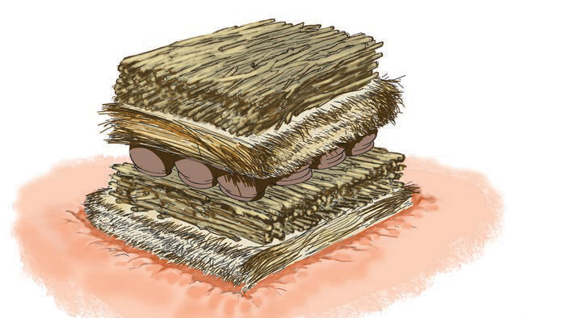

Uchomaji wa vyungu vya udongo
Vyungu vya kuoteshea maua vilivyotengenezwa kwa udongo wa mfinyanzi hupaswa kuchomwa kwa moto ili viwe imara. Vyungu vilivyochomwa haviwezi kumomonyoka endapo vitalowanishwa na maji. Uchomaji wa vyungu hivi hufanyika katika tanuri la wazi. Tanuri la wazi linatofautiana na tanuri la ndani. Tanuri la ndani lina mlango wa kuingizia vyungu na hewa. Pia, lina ukumbi wa kuchomea pamoja na bomba la kutolea moshi. Tanuri la wazi halina mjengo. Hivyo, vyungu, kuni nyembamba na majani makavu hupangwa mahali pa wazi palipochimbwa mbonyeo kidogo na uchomaji hufanyika hapo. Kuni nyembamba na majani makavu hutumiwa kwa sababu kinachohitajika kwenye njia hii ya uchomaji ni mwale wa moto.
Hatua za uchomaji wa vyungu vya udongo katika tanuri la wazi
Zifuatazo ni hatua za uchomaji wa vyungu vya udongo:
Laza majani makavu na kuni kavu kufunika vyungu na kuwasha moto. Kielelezo namba 10 kinaonesha mpangilio huo;
